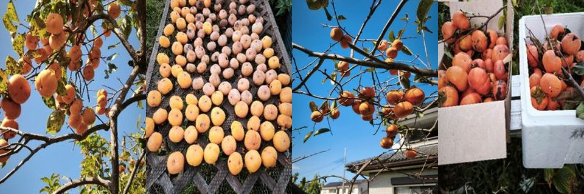

秋も深まると、佐藤農園の軒先に鮮やかな橙色（だいだいいろ）の柿が並びます。毎年恒例の干し柿づくりの季節です。
柿の木が1本になりました
昨年までは庭先と畑に1本ずつ、計2本の柿の木がありました。しかし、クマが柿を目当てに人里へ下りてくるのを防ぐため、地域の安全対策の一環として畑の木を伐採することに。地域の安全には代えられません。
「今年は収穫が半減するかな」と思っていましたが、庭に残った1本が思いのほか頑張ってくれています。枝がしなるほどたくさんの実がつき、毎日採っても追いつきません。
さらに困るのが鳥たちです。柿が熟してくると連日のようにやって来ては実をつついていきます。こちらも急いで収穫したいのですが、収穫の後には「皮むき・湯通し・乾燥」という作業が待っており、なかなか思うようには進みません。
朝、木を見上げるたびに気持ちばかり焦り、連日の作業に「もう柿は見飽きた」と思うこともあります。それでも、せっかくの実りを鳥たちに総取りされるわけにはいきません。
干し柿づくり、5つの工程
1. 柿をもぐ
高い枝の実を採るには木に登る必要があります。柿の枝は折れやすいため、足元と枝の強さを確かめながら慎重に作業を進めます。
2. ピーラーで皮をむく
収穫した柿の皮をピーラーで一つずつむいていきます。ひたすら続く根気の要る作業ですが、黙々と手を動かしていると不思議と無心になれる時間でもあります。
3. 熱湯に30秒ほどくぐらせる
皮をむいた柿を熱湯にさっとくぐらせます。表面の微生物を減らし、カビの発生を抑えるための大切なひと手間です。
4. 天日干しにする
昨年まではひもに吊るして「柿のカーテン」を作っていましたが、今年は干し芋のように台の上に広げて干す「平干し」に挑戦中。ひもに吊るす手間が省けるぶん、作業がはるかに楽になりました。
5. 毎日の手入れ
干したら終わりではありません。乾き具合を確かめながら向きを変え、鳥に食べられないよう周囲に気を配ります。おいしい干し柿に仕上げるには、この日々の管理が欠かせません。
実は我が家の柿、甘柿（次郎柿）なんです
通常、干し柿にするのは渋くて生食できない「平核無（ひらたねなし）や愛宕（あたご）など）」が一般的です。甘柿は水分が抜けにくく、生で十分甘いため、干し柿にすることは滅多にありません。
ですが、我が家の柿は代表的な完全甘柿である「次郎柿」。これを贅沢にも干し柿に仕立てています。
もちろん、生柿のまま食べても実にうまいのが次郎柿の魅力です。
近くのスーパー「ヤオコー」で見たところ、次郎柿は1個100円〜150円ほどで並んでいました。食べ頃は、皮の色づきが黄色から赤みを帯びてきて、手触りで少し硬さが緩んできたタイミング。涼しいところに保管しておいて、真冬にじっくりいただくのもおすすめです。
干してよし、生で食べてよし。今年も秋の恵みを大切にしながら、できあがりを楽しみに柿と向き合う日々が続きます。
